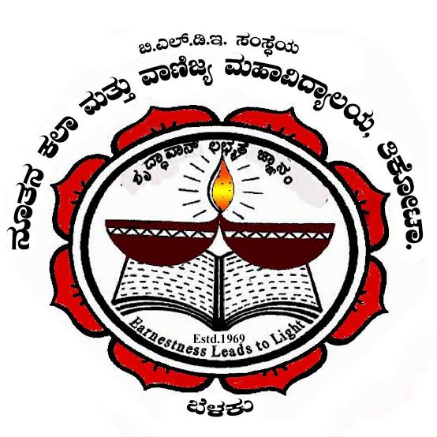
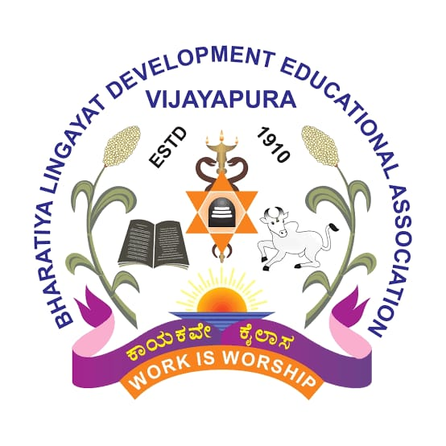
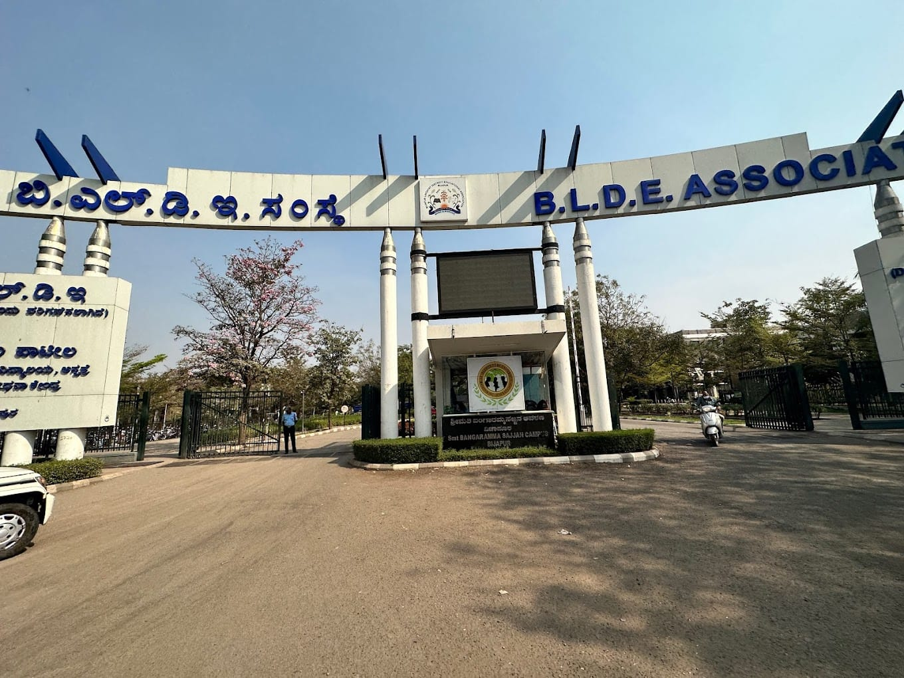
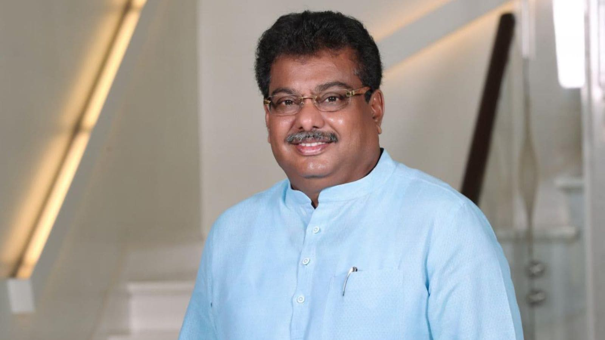

Our college is part of BLDE Association, providing excellent education and values.
Shree A.B.Jatti PU College is a prestigious Pre-University institution affiliated with the Bharatiya Lingayat Development Educational (BLDE) Association, Vijayapura. Established in 1969, the college has been a beacon of academic excellence for decades. Named after the distinguished statesman and former Vice President of India, Shri A.B.Jatti, the college carries forward his legacy of dedication to education and public service. The college offers Science, Arts, and Commerce streams with highly qualified faculty committed to nurturing students into well-rounded individuals ready to face the challenges of tomorrow.

Mallanagouda Basanagouda Patil (born 7 October 1964) is an Indian politician from Karnataka and a member of Karnataka Legislative Assembly representing Babaleshwar. He is currently serving as Cabinet Minister for Large & Medium Industries and Infrastructure Development in Government of Karnataka, He is also working president of Jagatika Lingayata Mahasabha.
He is the elder son of Shri B.M.Patil, a politician and an educationist. He has completed graduation in Bachelor of Engineering, Civil Engineering at the BLDEA's Vachana Pitamaha P G Halakatti College of Engineering.
M.B. Patil has been involved in various social works including the distribution of school bags & books to the needy students, helping government schools in establishing smart classrooms, organizing plantation drives across Vijayapura district etc., through M B Patil foundation.